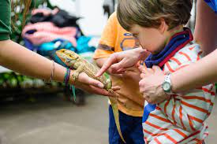
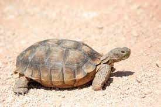

Visit us

Basil's Rescue is open and free to visit from 10am – 4pm on Monday, Tuesday, Wednesday, Thursday, Friday and Saturday
The entrance to the site is through the garden path gates, head towards the garden and follow the path to your right. No advance booking is required.
We have a fantastic shop which is open from 10am-1pm and 2pm-4pm. Visit the shop to purchase reptile food, enclosures, plants, gifts and more!
Organised groups

If you are part of an organised group or school and would like to visit, please be aware we are not able to accommodate these in the afternoons. In order
to safely manage numbers on site, we are offering pre-booked group visits in the mornings and we do charge for groups in order to contribute to our
running costs. Please contact our Education Manager via the schools page to book your visit.
We offer staff-led tours, educational workshops and self-led visits. We are not able to accommodate school or nursery groups in the afternoons and morning visits need to be pre-booked and confirmed by the Rescue so we can manage numbers on site.
We offer staff-led tours, educational workshops and self-led visits. We are not able to accommodate school or nursery groups in the afternoons and morning visits need to be pre-booked and confirmed by the Rescue so we can manage numbers on site.